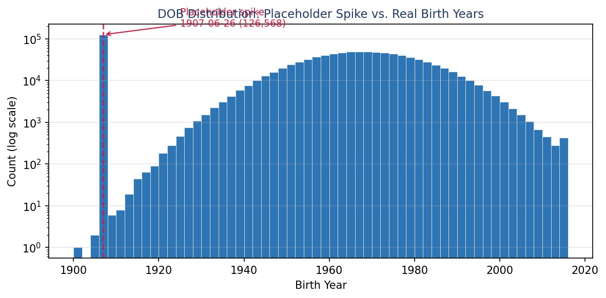

Application Fraud Detection
Fraud Analytics. Individual project on 1,000,000 credit card and phone applications.
Forecasting and riskCompleted
01Problem
A review team can only check a small share of applications. The model has to rank 1 million applications so the riskiest 3% hold as much fraud as possible.
02Approach
Found and neutralized placeholder values (one birth date appeared 126,568 times), built 1,841 identity-linking and velocity variables, cut them to 20, and compared 5 model families on later months the models never saw.
03Impact
LightGBM catches 58.9% of fraud in the top 3%, about 20 times random review. A 1.5% review cutoff saves an estimated $5.3M net on the 2-month holdout.
Results


What I did
- Data: 1,000,000 applications with 14,393 fraud cases (1.44%).
- Feature selection: KS filter, then forward wrapper selection scored on fraud caught in the top 3%.
- Picked LightGBM for the best out-of-time result and the smallest drop from test to later months.
- Cost curves assumed $4,000 lost per missed fraud and $100 per false alarm.
Code
def fdr_at(y_true, scores, pct=0.03):
"""Share of all fraud caught in the riskiest pct of records."""
df = pd.DataFrame({"y": y_true, "s": scores}).sort_values("s", ascending=False)
top = df.head(int(len(df) * pct))
return top["y"].sum() / df["y"].sum()
model = lgb.LGBMClassifier(n_estimators=100, num_leaves=5)
model.fit(X_train[final_20], y_train)
fdr_at(y_oot, model.predict_proba(X_oot[final_20])[:, 1]) # 0.589 on Nov-Dec dataTools
PythonLightGBMscikit-learnFeature engineering